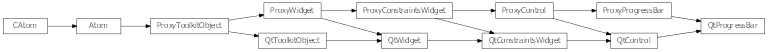
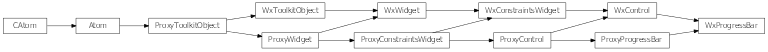

Bases: enaml.widgets.control.Control
A control which displays a value as a ticking progress bar.
The minimum progress value. If the minimum value is changed such that it becomes greater than the current value or the maximum value, then those values will be adjusted. The default is 0.
The maximum progress value. If the maximum value is changed such that it becomes smaller than the current value or the minimum value, then those values will be adjusted. The default is 100.
The position value of the Slider. The value will be clipped to always fall between the minimum and maximum.
Whether or not to display progress percentage on the control. This may not be supported by all toolkits and platforms.
How strongly a component hugs it’s content. ProgressBars expand to fill the available horizontal space by default.
A reference to the ProxyProgressBar object.

Bases: enaml.qt.qt_control.QtControl, enaml.widgets.progress_bar.ProxyProgressBar
A Qt implementation of an Enaml ProxyProgressBar.
A reference to the widget created by the proxy.

Bases: enaml.wx.wx_control.WxControl, enaml.widgets.progress_bar.ProxyProgressBar
A Wx implementation of an Enaml ProxyProgressBar.
A reference to the widget created by the proxy.